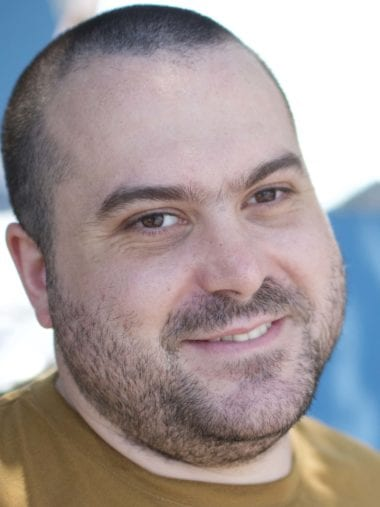
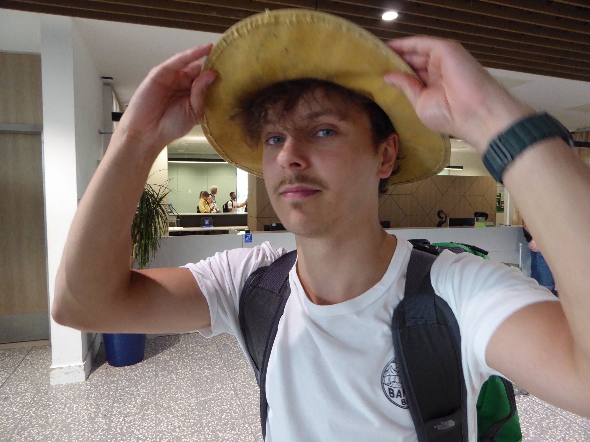

Genomics and Gene Regulation
The Genomics and Gene Regulation group at Cardiff University is interested in understanding how gene expression is regulated during both development and in a disease context, with a focus on cancer.
We use a number of computational and statistical approaches to ask and answer questions about biological systems, often in close collaboration with experimental biologists. Our research interests encompass a variety of themes, including understanding how the 3D structure around important transcription factors influences genome evolution and identifying the genomic and epigenetic features that determine whether a gene is regulated by a specific developmental signalling pathway.
Research
Publications
You can find a current and complete list of publications on Google Scholar and ORCID.
Software & Code
We are committed to open, reproducible computational biology. All software tools and analysis pipelines developed in the lab are available on the Harmston Lab GitHub.
Packages & Tools
- mLS-GKM —Efficient Multi-class Regulatory Sequence Classification with Gapped k-mer SVMs (arXiv 2026)
- nf-CNE — A Nextflow pipeline for identifying conserved non-coding elements
- DNAShaPy — A Python package for predicting DNA shape features from nucleotide sequences
- ggbulksurv — An R package for streamlined survival analysis, statistical testing, and publication-ready plotting of Drosophila and C. elegans lifespan experiments (microPublication Biology, 2024).
Reproducible Research Repositories
Code, workflows, and custom scripts accompanying our individual studies—including regulatory domain annotation, Wnt-regulated gene expression analyses, and single-cell transcriptomics—are linked directly alongside each paper in the Publications section above and archived on GitHub.
Team

Nathan Harmston — Principal Investigator
I am a computational biologist who leads the Genomics and Gene Regulation group at Cardiff University.
Email: harmstonn@cardiff.ac.uk
Kieran Howard — PhD Student
Kieran's PhD is focused on understanding the conservation and function of regulatory elements using data-driven approaches.
Nikita Subramani— PhD Student
Nikita's project is focused on identifying and characterising conserved non-coding elements in annelid genomes and how these are related to genome function and evolution

Ethan Friis— PhD Student
Ethan’s project focuses on investigating how TET enzymes regulate stem cell potency and fate commitment, exploring their roles in DNA demethylation, chromatin organisation and gene regulation during stem cell self-renewal and differentiation
Primary supervisor: — Dr. Tomasz Jurkowski
Previous lab members
- Qian Hui — Research Assistant (2019–2022)
- Ellora Chua — Research Assistant (2019–2022)
- Sara Haghani — Capstone student (2020–2021) & Research Assistant (2021–2022)
- Glenda Chin — Capstone student (2021–2022)
- Bin Choi — Summer Research Project (2021)
- Golam Rabbani — Summer Research Project (2021)
- Anbazhagan Pavithra — Summer Research Project (2021)
- Samen Yasar — Capstone student (2020–2021)
- Raihanah Nabilah Fatinah — Summer Research Project (2020)
- Maria Paula Leon Mora — Summer Research Project (2020)
- Anjali Kannangath — Capstone student (2019–2020)
Join the Lab
We are always keen to hear from motivated computational and quantitative researchers interested in gene regulation, genome evolution, and cancer genomics. We welcome applicants from a range of backgrounds—including biology, bioinformatics, computer science, statistics, and physics—who want to work closely alongside experimental collaborators.
- PhD Students: Funded PhD projects in the group are regularly advertised through the Cardiff University School of Biosciences and the BBSRC South West Biosciences Doctoral Training Partnership (SWBio DTP) (typically opening in the autumn for entry the following October). We also welcome inquiries from prospective students applying for external studentships or fellowships.
- Postdoctoral Researchers: While we do not currently have an open funded postdoc position, we are happy to support strong candidates interested in applying for independent fellowships (such as UKRI, Wellcome, EMBO, or Marie Skłodowska-Curie).
- Undergraduate & MSc Students: If you are a current Cardiff University student looking for a final-year dissertation, MSc project, or summer computational placement, please get in touch early in the academic year to discuss available projects.
News
- September 2026: Nikita Subramani joins the lab as a PhD student investigating the role that CNEs play in the genome evolution in annelids
- July 2026: New preprint posted: Single cell RNA sequencing of D. pseudoobscura testes reveals transcriptional signatures of heteromorphic spermatogenesis with Fiona Messer and Helen White-Cooper
- April 2026: Kieran Howard presents a poster at ISCB-UK 2026 - Discriminating Conserved Noncoding Elements and Enhancers Using Interpretable Machine Learning Models
- April 2026: Sarcopenia promotes tumorigenesis by disrupting NOTCH-SDC2-regulated biogenesis of muscle-derived extracellular vesicles is now published in Nature Communications
- January 2026: Identification of Wnt-regulated genes that are repressed by, or independent of, β-catenin is now published in The FEBS Journal
- November 2025: Exercise suppresses DEAF1 to normalize mTORC1 activity and reverse muscle aging is now published in PNAS
- July 2006: Kieran Howard presents a poster at ISCB 2025 - nf-CNE: A Nextflow pipeline for identifying conserved non-coding elements
- May 2025: ATF4:p52 Complex activates oncogenic enhancers in multiple myeloma via p300/CBP recruitment to regulate BACH1 is now published in Cancer Letters
- April 2025: New preprint posted: Identification of Wnt-regulated genes that are repressed by, or independent of, β-catenin with the Virshup lab
- September 2024: Kieran Howard joins the lab as a PhD student working to understand enhancer function and conservation
Older news (2019–2024)
- July 2024: FOXO-regulated DEAF1 controls muscle regeneration through autophagy is now published
- May 2024: ggbulksurv: An R package for easy Drosophila and C. elegans survival analysis is now out in microPublication Biology
- March 2024: Aberrant non-canonical NF-κB signalling reprograms the epigenome landscape to drive oncogenic transcriptomes in multiple myeloma is now published as part of a collaboration with Dr. Yinghui Li's group at NTU, Singapore
- February 2024: The Wnt Co-Receptor PTK7/Otk and Its Homolog Otk-2 in Neurogenesis and Patterning is now published – congrats QH
- January 2024: The cholesterol biosynthesis enzyme FAXDC2 couples Wnt/β-catenin to RTK/MAPK signaling is now published online
- December 2023: New preprint posted: The cholesterol biosynthesis enzyme FAXDC2 couples Wnt/beta-catenin to RTK/MAPK signaling
- October 2022: Combining stem cell rejuvenation and senescence targeting to synergistically extend lifespan is now published
- August 2022: A high-resolution map of human RNA translation is now published
- June 2022: A p300/GATA6 axis determines differentiation and Wnt dependency in pancreatic cancer models is now published
- June 2022: A non-canonical Raf function is required for dorsal–ventral patterning during Drosophila embryogenesis is now published
- April 2022: New preprint posted: Combining Stem Cell Rejuvenation and Senescence Targeting to Synergistically Extend Lifespan as part of a collaboration with the Tolwinski and Gruber labs at Yale-NUS
- April 2022: New review paper published – The importance of considering regulatory domains in genome-wide analyses – the nearest gene is often wrong!
- January 2022: Wnt Signaling Rescues Amyloid Beta-Induced Gut Stem Cell Loss now published
- September 2021: New preprint posted: Wnt signaling rescues amyloid beta induced stem cell loss as part of a collaboration with the Tolwinski lab at Yale-NUS
- August 2021: Glenda Chin joins the lab for her capstone project
- August 2021: Sara Haghani joins the lab as a Research Assistant
- July 2021: New preprint posted: A Non-Canonical Raf Function Is Required for Dorsal-Ventral Patterning During Drosophila Embryogenesis as part of a collaboration with the Tolwinski lab at Yale-NUS
- November 2020: Perspective on Regulation in common: Sponge to zebrafish now published in Science
- November 2020: Our poster on Analyses of mutational and structural variation in a cohort of anaplastic astrocytoma has been accepted at Frontiers in Cancer Science, Singapore 2020
- August 2020: Samen Yasar and Sara Haghani join the lab for their capstone projects
- October 2019: Ellora Chua joins the lab as a Research Assistant
- August 2019: Anjali Kannangath joins the lab for her capstone project
- August 2019: Nathan presents on TADs Are Ancient Features that Coincide with Metazoan Clusters of Noncoding Conservation at (GRC) Genome Architecture in Cell Fate and Disease, Hong Kong 2019
Contact
Email: harmstonn@cardiff.ac.uk
Location: School of Biosciences, Cardiff University, Cardiff, UK
Profiles:
Cardiff University ·
GitHub ·
ORCID ·
Google Scholar